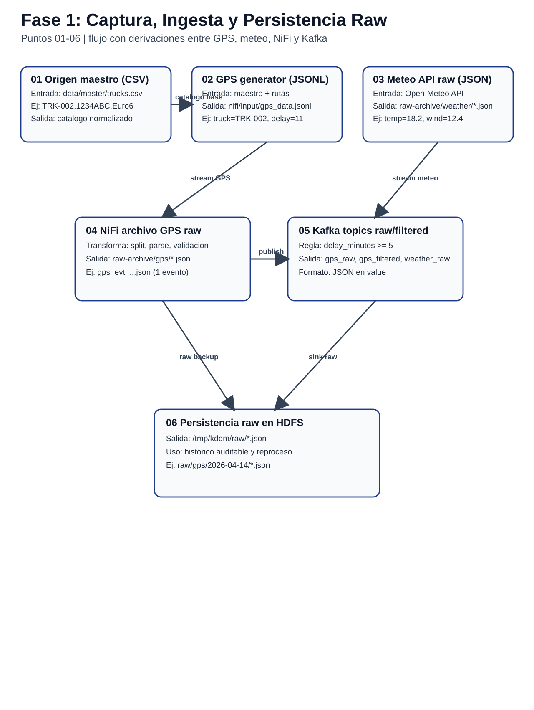
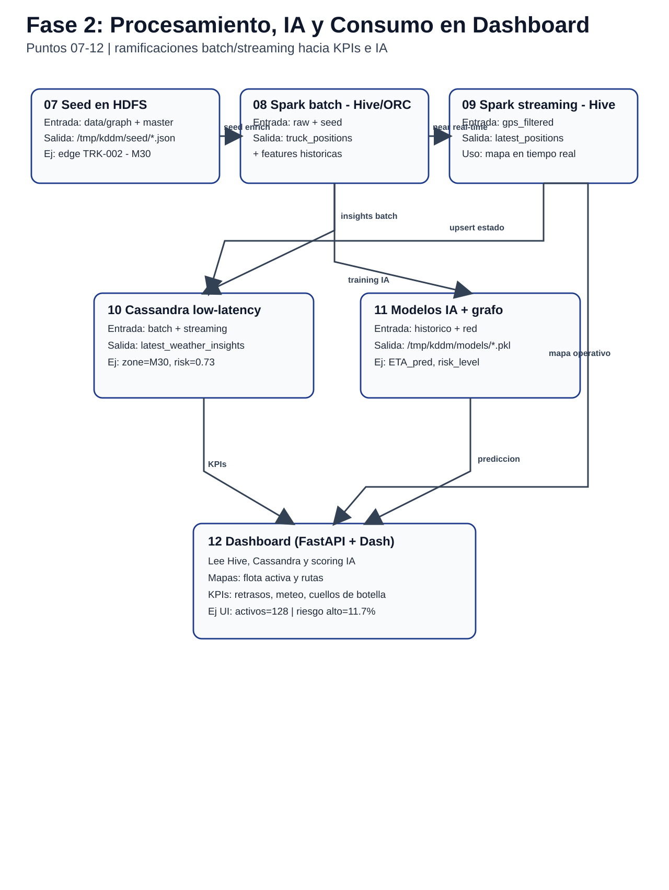

Version: 2.0
Fecha: 14/04/2026
Ambito: Ingesta, transformacion, almacenamiento, analitica, grafos/IA y
consumo en dashboard
Este documento describe de forma auditada como un dato logistico recorre la plataforma desde su captura inicial hasta su visualizacion en mapas, estadisticas operativas y componentes de IA.
El recorrido esta estructurado en 12 puntos de control, y en cada punto se documenta: 1. De donde sale el dato. 2. Como se transforma. 3. Donde se guarda. 4. En que formato queda. 5. Un ejemplo real de entrada y de salida. 6. Un script para demostrarlo en vivo.


| Punto | Origen | Transformacion principal | Destino | Formato destino | Script de evidencia |
|---|---|---|---|---|---|
| 01 | data/master, data/graph |
Normalizacion catalogos | Spark + Dashboard | CSV (fuente) | scripts/data_lineage/01_origen_maestros_locales.sh |
| 02 | gps-generator |
Emision continua de telemetria | nifi/input |
JSONL | scripts/data_lineage/02_ingesta_gps_nifi_input.sh |
| 03 | Open-Meteo | Extraccion NiFi de campos meteo | nifi/raw-archive/weather |
JSON | scripts/data_lineage/03_ingesta_weather_nifi_raw_archive.sh |
| 04 | NiFi GPS flow | Split + parse + nombre unico UUID | nifi/raw-archive/gps |
JSON por evento | scripts/data_lineage/04_nifi_raw_archive_gps.sh |
| 05 | NiFi PublishKafka | Enrutado raw/filtered | Kafka topics | JSON en value |
scripts/data_lineage/05_kafka_topics_raw_y_filtrados.sh |
| 06 | raw-hdfs-loader |
Sincronizacion con timestamp | HDFS raw NiFi | JSON/JSONL | scripts/data_lineage/06_hdfs_raw_nifi.sh |
| 07 | Seed local | Carga inicial HDFS | HDFS raw/master/graph | JSONL + CSV | scripts/data_lineage/07_hdfs_seed_batch_input.sh |
| 08 | Spark batch | Limpieza + enriquecimiento + grafos + ML | Hive + HDFS modelo | Tablas Hive + artefacto | scripts/data_lineage/08_hive_batch_grafo_ml.sh |
| 09 | Spark streaming | Parse + watermark + dedupe + ventanas | Hive streaming + Cassandra | Tablas Hive/Cassandra | scripts/data_lineage/09_hive_streaming_y_vistas_madrid.sh |
| 10 | Spark + dashboard backend | Persistencia operacional | Cassandra | CQL tables | scripts/data_lineage/10_cassandra_operacional.sh |
| 11 | Pipeline ML | Seleccion modelo por RMSE | HDFS + Hive scoring | Modelo + tabla scoring | scripts/data_lineage/11_modelo_ia_y_artifacto_hdfs.sh |
| 12 | APIs dashboard | Filtros/routing/KPIs | Frontend visual | JSON API -> UI | scripts/data_lineage/12_dashboard_fuentes_y_consumo.sh |
Grafico Punto 01 (entrada -> transformacion -> salida)
data/master/warehouses.csv,
data/master/vehicles.csv,
data/graph/vertices.csv,
data/graph/edges.csvMAD,Madrid Hub,ES,South Europe,high,40.4168,-3.7038warehouse_id=MAD, warehouse_name=Madrid Hub,
criticality=highscripts/data_lineage/01_origen_maestros_locales.shGrafico Punto 02 (entrada -> transformacion -> salida)
gps-generatorvehicle_id=TRUCK-009,
delay_minutes=11,
event_time=2026-04-13T21:48:32Zgps_20260413T214832Z.jsonl
en nifi/inputscripts/data_lineage/02_ingesta_gps_nifi_input.shGrafico Punto 03 (entrada -> transformacion -> salida)
temperature_2m=18.7,
wind_speed_10m=5.6nifi/raw-archive/weather/*scripts/data_lineage/03_ingesta_weather_nifi_raw_archive.shGrafico Punto 04 (entrada -> transformacion -> salida)
gps_..._77890958-707f-46cc-944c-986dc36b2f1d.jsonlscripts/data_lineage/04_nifi_raw_archive_gps.shGrafico Punto 05 (entrada -> transformacion -> salida)

transport.raw, transport.filtered,
transport.weather.raw,
transport.weather.filteredscripts/data_lineage/05_kafka_topics_raw_y_filtrados.shGrafico Punto 06 (entrada -> transformacion -> salida)
/data/raw/nifi/gps,
/data/raw/nifi/weatherscripts/data_lineage/06_hdfs_raw_nifi.shGrafico Punto 07 (entrada -> transformacion -> salida)

hdfs://hadoop:9000/data/raw/gps_events.jsonlscripts/data_lineage/07_hdfs_seed_batch_input.shGrafico Punto 08 (entrada -> transformacion -> salida)

enriched_events,
delay_metrics_batch, route_graph_metrics,
route_shortest_paths,
ml_delay_risk_scoresevent_time string ->
event_timestamp tipadoscripts/data_lineage/08_hive_batch_grafo_ml.shGrafico Punto 09 (entrada -> transformacion -> salida)

event_id y weather_event_idv_delay_metrics_streaming_madrid,
v_weather_observations_madridscripts/data_lineage/09_hive_streaming_y_vistas_madrid.shGrafico Punto 10 (entrada -> transformacion -> salida)
vehicle_latest_state,
weather_observations_recent,
network_insights_snapshots,
model_retrain_statescripts/data_lineage/10_cassandra_operacional.shGrafico Punto 11 (entrada -> transformacion -> salida)
hdfs://hadoop:9000/models/delay_risk_rfscripts/data_lineage/11_modelo_ia_y_artifacto_hdfs.shGrafico Punto 12 (entrada -> transformacion -> salida)

nifi/input y
nifi/raw-archive/weatherscripts/data_lineage/12_dashboard_fuentes_y_consumo.shevent_id,
weather_event_id).from_utc_timestamp).vehicle_latest_state) menor de 900
segundos.transport_analytics./models/delay_risk_rf./data/curated/*_streaming../scripts/data_lineage/01_origen_maestros_locales.sh y
mostrar origen maestro../scripts/data_lineage/02_ingesta_gps_nifi_input.sh y
03_ingesta_weather_nifi_raw_archive.sh../scripts/data_lineage/05_kafka_topics_raw_y_filtrados.sh
para evidenciar bus de eventos../scripts/data_lineage/08_hive_batch_grafo_ml.sh para
evidenciar valor analitico y de IA../scripts/data_lineage/10_cassandra_operacional.sh para
latencia operacional../scripts/data_lineage/12_dashboard_fuentes_y_consumo.sh
para cierre visual de negocio.Ejecucion completa automatica:
./scripts/data_lineage/00_run_all.sh